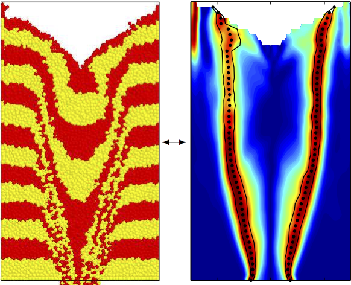
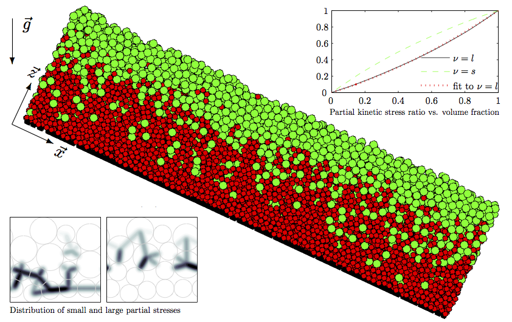
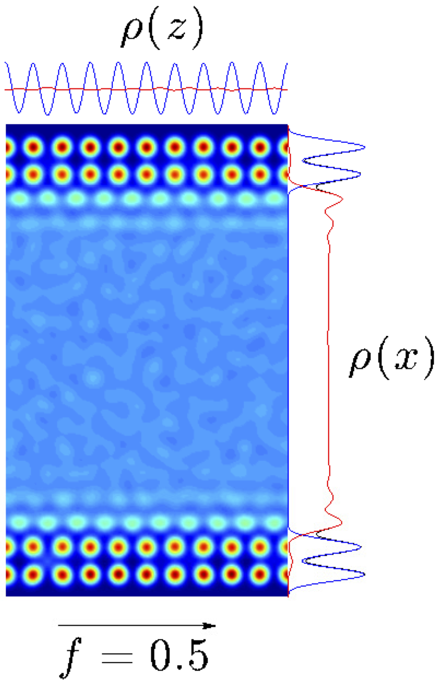

What is MercuryCG?
MercuryDPM contains a unique toolbox for analysing particle data: the MercuryCG toolbox.
Particle simulations create huge amounts of data (particle trajectories and interactions), but most of it is irrelevant to understand the behaviour of a particular process. What really matters to the process engineer is the macroscopic behaviour of the bulk material, which is typically described by continuum fields, such as density, velocity, stress, or temperature.
MercuryCG extracts these continuum fields from the particle data (positions, velocities, forces) via a method called coarse-graining, which is explained in [Goldhirsch, Granular Matter, 2010] and [Weinhart et al, Granular Matter, 2012].
The following pages are intended for MercuryDPM users that want to use MercuryCG to extract continuum data from their particle simulations. This can be done either concurrently (during the simulation) or as a post-processing step (after the simulation, based on the output data).
Documentation
Each type of use has been documented on a separate page:.
The first page describes the mathematical formulae used to extract continuum fields from particle data. The second/third page tells you how to apply the analysis tool as a post-processing tool. The third page tells you how to apply concurrently, while running a MercuryDPM simulation.
While the tool has been developed to analyse MercuryDPM simulations, it can also be used to extract information from other particle simulation software, and even experimental data, as long as the data provided in the MercuryDPM output format.
Examples
Here are two examples of the coarse-graining method applied:
- Silo flow [Weinhart et al, Powder Technology 293, 138-148 (2016)]:  The figure on the left shows a 3D particle simulation of granular flow through a thin, rectangular silo. One can observe three regions, a static zone near the side walls, a shear band, and core flow. To properly define those regions, we use coarse graining to define the velocity \(\vec{v}(x,z)\), averaged over depth y and time t, then plot the normalized pure shear, \(s=\frac{\partial_xv_z(x,z)}{\max_z\partial_xv_z(x,z)}\), shown in the right figure. One can clearly see that the pure shear is large in the shear band. By fitting the pure shear values with a Gaussian, the shear band centre and width can be clearly defined.
- Segregating flow [Weinhart et al, AIP Conf. Proc. 1542, 1202-1205 (2013)]  The centre image shows the flow of a mixture of particles of two different sizes down an inclined, rough surface. The simulation is periodic in x- and y-direction and evolved until the flow is steady, uniform. One can clearly see that the mixture segregates, with large particles on the top and small particles on the bottom. To find out what causes the segregation, we compute the continuum fields of the small and large particles separately and look for differences between the two mixture components. We observe that the contribution of the small particles to the granular temperature (or kinetic stress) is overproportionally large (i.e. larger than their volume fraction), shown in the top right of the figure. This suggests that segregation is driven by the kinetic stress differences between the components (and not the total stress differences, as was suggested in previous work). Note that coarse-graining clearly defines how much each mixture component contributes to the total stress, and it was only due to that clear definition of partial stresses in the coarse-graining formulation that this effect could be observed.
- Atomistic fluids [Hartkamp et al, J. Chem. Phys. 137, 044711 (2012)]  Coarse-graining is also applicable to molecular dynamics simulations, in this case atomistic flow through a nanochannel. Near the channel wall, we observed oscillations in the flow density, which indicates that the flow is slightly ordered. To resolve this phenomenon, a high spatial resolution is required, which can easily be obtained in coarse-graining by using a small length scale \(w\).